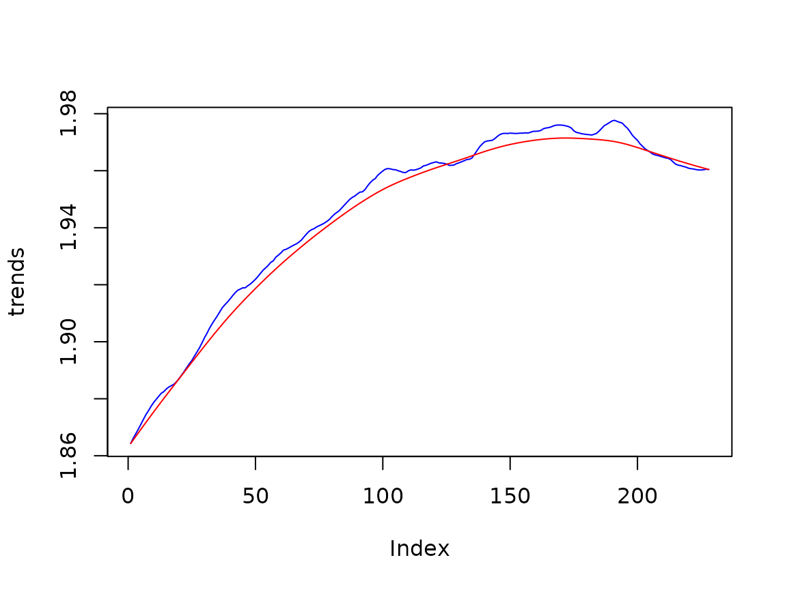

Defining a Basic Structural Model with rjd3sts
The package allows several equivalent definitions of a basic structural model. We present below some of them.
To compare the results (more precisely the likelihood) of the different approaches, it is important to compute the marginal likelihood.
s<-log(retail$BookStores)Standard definition, noise in the state
# create the model
bsm<-model()
# create the components and add them to the model
add(bsm, locallineartrend("ll"))
add(bsm, seasonal("s", 12, type="HarrisonStevens"))
add(bsm, noise("n"))
rslt<-estimate(bsm, log(s), marginal=TRUE)- Likelihood = 747.8184945
- Parameters = 0.160016, 0.000396, 0.243922, 1.000000
Standard definition, noise in the measurement
# create the model
bsm<-model()
# create the components and add them to the model
add(bsm, locallineartrend("ll"))
add(bsm, seasonal("s", 12, type="HarrisonStevens"))
# create the equation (fix the variance to 1)
eq<-equation("eq", 1,TRUE)
add_equation(eq, "ll")
add_equation(eq, "s")
add(bsm, eq)
rslt<-estimate(bsm, log(s), marginal=TRUE)- Likelihood = 747.8184945
- Parameters = 0.160016, 0.000396, 0.243922, 1.000000
components with fixed variances, aggregated with diffuse weights (noise in the state)
# create the model
bsm<-model()
# create the components, with fixed variances, and add them to the model
add(bsm, locallineartrend("ll",
levelVariance = 1, fixedLevelVariance = TRUE) )
add(bsm, seasonal("s", 12, type="HarrisonStevens",
variance = 1, fixed = TRUE))
add(bsm, noise("n", 1, fixed=TRUE))
# create the equation (fix the variance to 1)
eq<-equation("eq", 0, TRUE)
add_equation(eq, "ll", .01, FALSE)
add_equation(eq, "s", .01, FALSE)
add_equation(eq, "n")
add(bsm, eq)
rslt<-estimate(bsm, log(s), marginal=TRUE)
p<-result(rslt, "parameters")- Likelihood = 747.8184944
- Parameters = 1.0000, 0.0025, 1.0000, 1.0000, 0.4001, 0.4939
To be noted:
- Level variance = = 0.160057
- Slope variance = = 0.000396
- Seas variance = = 0.243976
bsm with long term trend and cycle
# create the model
bsm<-model()
# create the components and add them to the model
add(bsm, locallevel("l", initial = 0) )
add(bsm, locallineartrend("lt", levelVariance = 0,
fixedLevelVariance = TRUE) )
add(bsm, seasonal("s", 12, type="HarrisonStevens"))
add(bsm, noise("n", 1, fixed=TRUE))
# create the equation (fix the variance to 1)
rslt<-estimate(bsm, log(s), marginal=TRUE)- Likelihood = 747.8184945
- Parameters = 0.160016, 0.000000, 0.000396, 0.243922, 1.000000
ss<-smoothed_states(rslt)
plot(ss[,1]+ss[,2], type='l', col='blue', ylab='trends')
lines(ss[, 2], col='red')